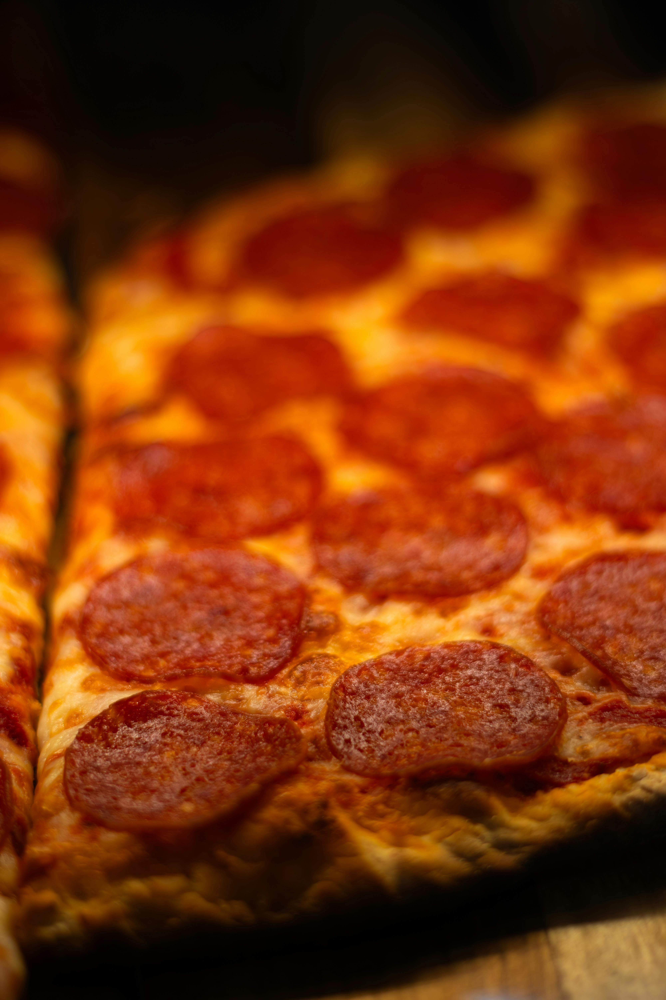

My pizza recipe!

Here's how to make the best pizza ever!
Ingredients:
- 1 cup of flour
- 1/2 cup of water
- 1 tablespoon of yeast
- 1 teaspoon of salt
- 1/2 cup of tomato sauce
- 1 cup of shredded mozzarella cheese
- 1/2 cup of sliced pepperoni
Instructions:
- In a large bowl, combine the flour, water, yeast, and salt. Mix until a dough forms.
- Knead the dough on a floured surface for about 5 minutes, until it becomes smooth and elastic.
- Place the dough in a greased bowl, cover it with a damp cloth, and let it rise in a warm place for about 1 hour, or until it doubles in size.
- Preheat your oven to 475°F (245°C).
- Roll out the dough on a floured surface to your desired thickness and shape.
- Transfer the rolled-out dough to a pizza stone or baking sheet.
- Spread the tomato sauce evenly over the dough, leaving a small border around the edges.
- Sprinkle the shredded mozzarella cheese over the sauce.
- Arrange the sliced pepperoni on top of the cheese.
- Bake the pizza in the preheated oven for about 12-15 minutes, or until the crust is golden and the cheese is bubbly and slightly browned.
- Remove the pizza from the oven and let it cool for a few minutes before slicing and serving. Enjoy your delicious homemade pizza!
Back to home